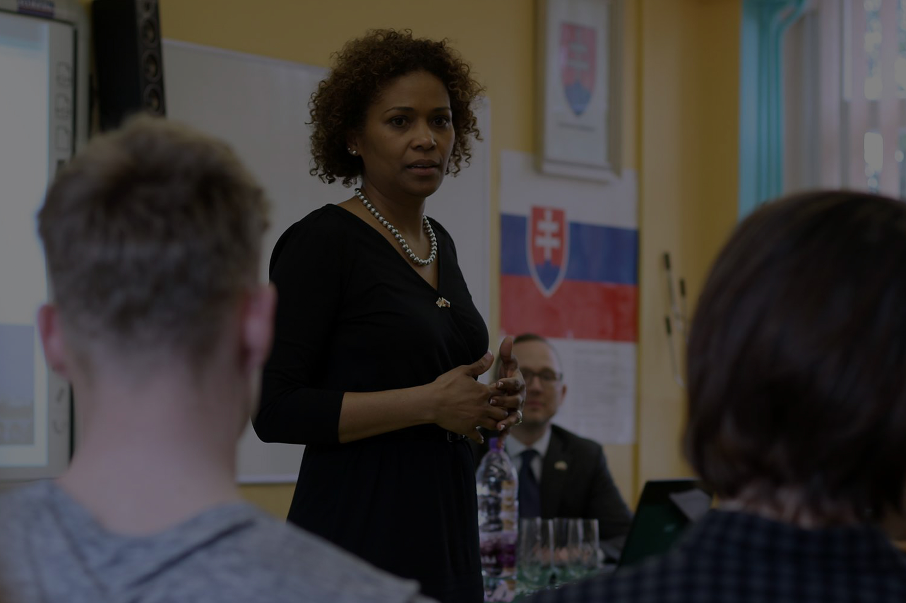

Školský vzdelávací program
Štátne vzdelávacie programy vymedzujú všeobecné ciele škôl a kľúčové kompetencie vo vyváženom rozvoji osobnosti žiakov a rámcový obsah vzdelania. Štátne vzdelávacie programy sú východiskom pre vytvorenie školských vzdelávacích programov škôl, kde sa zohľadnia špecifické regionálne podmienky a potreby. Ministerstvo školstva, vedy, výskumu a športu Slovenskej republiky vydalo štátne vzdelávacie programy pre rôzne typy škôl.
Aktuálne znenie nášho školského vzdelávacieho programu, ako i učebné plány oboch odborov a prislúchajúce poznámky k nim nájdete v priložených dokumentoch:
Sme prvé porevolučné gymnázium na Slovensku s osemročným študijným plánom zameraným na výučbu cudzích jazykov a informatiky. Dosahujeme vynikajúce umiestnenia a získavame ocenenia vo vedomostných súťažiach a predmetových olympiádach. Zapájame sa do väčšiny aktivít v rámci mesta a okolia.
Gymnázium vychováva všestranne rozvinutú osobnosť. Aktívnu, samostatnú a tvorivú. Pripravuje študenta na maturitnú skúšku v súlade s cieľovými požiadavkami na vedomosti maturantov dosiahnutím úplného stredného vzdelania a pripravuje študentov predovšetkým na štúdium na vysokej škole. Naším poslaním je pripraviť študentov na využívanie všetkých informačných zdrojov rozvíjaním ich schopností vyhľadávať, hodnotiť a využívať rôzne zdroje informácií proklamovaním konceptu individuálnej slobody a prístupu k informáciám ako základu pre efektívne a zodpovedné občianstvo.
Odlišnosťou od iných stredných škôl je, že sa tu kontaktujú 10-roční študenti prím s 19-ročnými študentmi maturitných ročníkov. Prostredie vzájomnej tolerancie a spolupráce je prínosom pre všetky vekové kategórie. Dostávajú tu možnosť už 10-ročné deti vzdelávať sa v intelektuálne vyrovnanom kolektíve. Vzdelanostná úroveň študentov jednotlivých tried umožňuje rýchlejšie napredovanie a dôkladnú prípravu študentov na úspešné zvládnutie prijímacích skúšok na vysoké školy. Naša škola má dobrý kolektív, ktorý je ochotný neustále sa vzdelávať a presadzovať nové trendy vo výchove a vzdelávaní. Významnou súčasťou našej školy je Štátna jazyková škola.
Úsilím všetkých pedagógov je, aby žiaci s radosťou chodili do školy, cítili sa v nej dobre, aby boli úspešní v každej životnej situácií, aby robili dobré meno sebe aj škole. Snažíme sa, aby žiaci prežívali v našej škole pestrý a plnohodnotný život bez strachu, drog a násilia. Snažíme sa, aby sme patrili k uznávaným školám v meste i okolí, aby s našou prácou a jej výsledkami boli spokojní všetci partneri školy. Chceme získať čo najviac kvalitných študentov.
1. Výchovno-vzdelávací proces, ktorý sa zabezpečuje podľa príslušného školského vzdelávacieho programu
2. Vyučovanie sa realizuje v učebniach.Okrem klasických učební sú k dispozícii aj odborné učebne biológie, chémie, fyziky, informatiky a cudzích jazykov
3. Mimoriadnu pozornosť venujeme jazykovej príprave. Našim cieľom je, aby náš absolvent aktívne ovládal cudzí jazyk
4.Pre športové aktivity je k dispozícii telocvičňa, posilňovňa a dve ihriská
Všeobecné stredoškolské vzdelávanie je nevyhnutnou podmienkou na rozvoj intelektuálneho potenciálu a všeobecnú kultivovanosť osobnosti potrebnú na adaptabilitu a na získanie príslušnej kvalifikácie. Jeho poslaním je dosiahnuť všestrannú vzdelanosť, tvorivosť, samostatnosť a adaptabilitu v uvažovaní a konaní mladých ľudí.
1. Vytvárať efektívne prostredie pre výchovu a vzdelávanie, v ktorom by študenti a zamestnanci zažívali pocit úspechu a radosti.
2. Poskytovať podmienky pre kvalitný vyučovací proces zameraný na prípravu na vysokoškolské štúdium.
1. Sloboda a zodpovednosť
2. Dôvera a rast študenta
3. Uznanie individuálnych rozdielov medzi študentami
4. Otvorenosť k chybám
5. Spolupráca
6. Učenie sa činnosťou
1. V maximálnej miere akceptovať študentom individuálnu profiláciu.
2. Humanizácia výchovného a vzdelávacieho procesu.
1. Kvalifikovaný pedagogický zbor.
2. Vynikajúce umiestňovanie absolventov na vysoké školy.
3. Dobrý imidž školy
4. Vybavenosť školy výpočtovou a didaktickou technikou.
5. Štátna jazyková škola.
6. CISCO
7. Tvorba školského časopisu.
8. Informačne bohatá webová stránka.
9. Zaujímavé mimoškolské aktivity.
10. Krúžková činnosť.
11. Ďalšie vzdelávanie pedagogických pracovníkov.
12. Realizácia projektov a grantov.
1. Mať komunikačné schopnosti a spôsobilosti – to znamená, dokáže sa ústne a písomne vyjadrovať, vysvetľovať, čítať s porozumením, vyhľadávať, uchovávať a používať informácie, tvoriť informácie, a to aj v cudzích jazykoch.
2. Mať personálne a interpersonálne schopnosti – t.j. Bude spôsobilý zdokonaľovať svoju výkonnosť, bude schopný racionálne a samostatne sa celý život vzdelávať, učiť sa, kontrolovať, regulovať svoje správanie, pracovať v tíme, starať sa o svoje zdravie a životné prostredie, bude schopný uznávať ľudské práva a slobody.
3. Mať schopnosti tvorivo a kriticky riešiť problémy – t. J. Identifikovať ich, analyzovať, navrhovať riešenia, spätne ich zhodnocovať a učiť sa z nich, vedieť pracovať aj v náročných, záťažových podmienkach, pracovať s modernými informačnými technológiami t. J. S osobným počítačom, internetom schopný formovať občiansku spoločnosť – ide o schopnosť občanov prispievať na miestnej, štátnej, európskej i globálnej úrovni k rozvíjaniu demokratického systému spoločnosti, k trvale udržateľnému hospodárskemu a sociálnemu rozvoju štátu so zodpovednosťou voči životnému prostrediu a zachovaniu života na Zemi.
Hlavným kritériom pre nás bude spokojnosť žiakov, rodičov , učiteľov a kvalitné výsledky študentov na súťažiach a prijímacích pohovoroch na vysoké školy.